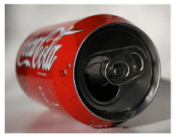
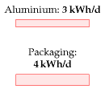
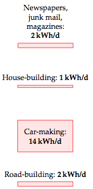
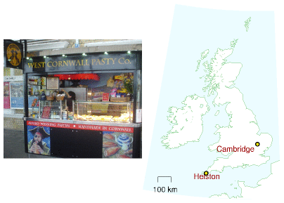
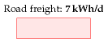
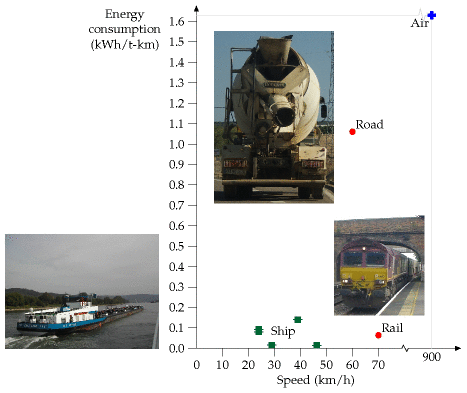
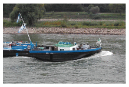
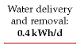
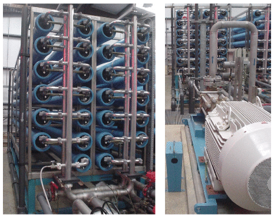
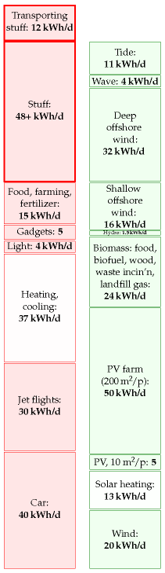

15 Stuff
Figure 15.1. Selfridges’ rubbish advertisement.
One of the main sinks of energy in the “developed” world is the creation of stuff. In its natural life cycle, stuff passes through three stages. First, a new-born stuff is displayed in shiny packaging on a shelf in a shop. At this stage, stuff is called “goods.” As soon as the stuff is taken home and sheds its packaging, it undergoes a transformation from “goods” to its second form, “clutter.” The clutter lives with its owner for a period of months or years. During this period, the clutter is largely ignored by its owner, who is off at the shops buying more goods. Eventually, by a miracle of modern alchemy, the clutter is transformed into its final form, rubbish. To the untrained eye, it can be difficult to distinguish this “rubbish” from the highly desirable “good” that it used to be. Nonetheless, at this stage the discerning owner pays the dustman to transport the stuff away.
Let’s say we want to understand the full energy-cost of a stuff, perhaps with a view to designing better stuff. This is called life-cycle analysis. It’s conventional to chop the energy-cost of anything from a hair-dryer to a cruise-ship into four chunks:
embodied energy (kWh per kg)
fossil fuel
10
wood
5
paper
10
glass
7
PET plastic
30
aluminium
40
steel
6
Table 15.2. Embodied energy of materials.
- Phase R: Making raw materials. This phase involves digging minerals out of the ground, melting them, purifying them, and modifying them into manufacturers’ lego: plastics, glasses, metals, and ceramics, for example. The energy costs of this phase include the transportation costs of trundling the raw materials to their next destination.
- Phase P: Production. In this phase, the raw materials are processed into a manufactured product. The factory where the hair-dryer’s coils are wound, its graceful lines moulded, and its components carefully snapped together, uses heat and light. The energy costs of this phase include packaging and more transportation.
- Phase U: Use. Hair-dryers and cruise-ships both guzzle energy when they’re used as intended.
- Phase D: Disposal. This phase includes the energy cost of putting the stuff back in a hole in the ground (landfill), or of turning the stuff back into raw materials (recycling); and of cleaning up all the pollution associated with the stuff.


Figure 15.3. Five aluminium cans per day is 3 kWh/d. The embodied energy in other packaging chucked away by the average Brit is 4 kWh/d.
(Figure omitted from this edition: third-party rights.)
Figure 15.4. She’s making chips. Photo: ABB. Making one personal computer every two years costs 2.5 kWh per day.
To understand how much energy a stuff’s life requires, we should estimate the energy costs of all four phases and add them up. Usually one of these four phases dominates the total energy cost, so to get a reasonable estimate of the total energy cost we need accurate estimates only of the cost of that dominant phase. If we wish to redesign a stuff so as to reduce its total energy cost, we should usually focus on reducing the cost of the dominant phase, while making sure that energy-savings in that phase aren’t being undone by accompanying increases in the energy costs of the other three phases.
Rather than estimating in detail how much power the perpetual production and transport of all stuff requires, let’s first cover just a few common examples: drink containers, computers, batteries, junk mail, cars, and houses. This chapter focuses on the energy costs of phases R and P. These energy costs are sometimes called the “embodied” or “embedded” energy of the stuff – slightly confusing names, since usually that energy is neither literally embodied nor embedded in the stuff.
Drink containers
Let’s assume you have a coke habit: you drink five cans of multinational chemicals per day, and throw the aluminium cans away. For this stuff, it’s the raw material phase that dominates. The production of metals is energy intensive, especially for aluminium. Making one aluminium drinks-can needs 0.6 kWh. 1 So a five-a-day habit wastes energy at a rate of 3 kWh/d.
As for a 500 ml water bottle made of PET (which weighs 25 g), the embodied energy is 0.7 kWh 2 – just as bad as an aluminium can!
Other packaging
The average Brit throws away 400 g of packaging per day 3 – mainly food packaging. The embodied energy content of packaging ranges from 7 to 20 kWh per kg as we run through the spectrum from glass and paper to plastics and steel 4 cans. Taking the typical embodied energy content to be 10 kWh/kg, we deduce that the energy footprint of packaging is 4 kWh/d. A little of this embodied energy is recoverable by waste incineration, as we’ll discuss in Chapter 27.
Computers
Making a personal computer costs 1800 kWh of energy. 5 So if you buy a new computer every two years, that corresponds to a power consumption of 2.5 kWh per day.
Batteries
The energy cost of making a rechargeable nickel-cadmium AA battery, storing 0.001 kWh of electrical energy and having a mass of 25 g, is 1.4 kWh (phases R and P). 6 If the energy cost of disposable batteries is similar, throwing away two AA batteries per month uses about 0.1 kWh/d. The energy cost of batteries is thus likely to be a minor item in your stack of energy consumption.
Newspapers, magazines, and junk mail
A 36-page newspaper, distributed for free at railway stations, weighs 90 g. The Cambridge Weekly News (56 pages) weighs 150 g. The Independent (56 pages) weighs 200 g. A 56-page property-advertising glossy magazine and Cambridgeshire Pride Magazine (32 pages), both delivered free at home, weigh 100 g and 125 g respectively.

This river of reading material and advertising junk pouring through our letterboxes contains energy. It also costs energy to make and deliver. Paper has an embodied energy of 10 kWh per kg. 7 So the energy embodied in a typical personal flow of junk mail, magazines, and newspapers, amounting to 200 g of paper per day (that’s equivalent to one Independent per day for example) is about 2 kWh per day.
Paper recycling would save about half of the energy of manufacture; waste incineration or burning the paper in a home fire may make use of some of the contained energy.
Bigger stuff
The largest stuff most people buy is a house.
In Chapter H, I estimate the energy cost of making a new house. Assuming we replace each house every 100 years, the estimated energy cost is 2.3 kWh/d. This is the energy cost of creating the shell of the house only – the foundation, bricks, tiles, and roof beams. If the average house occupancy is 2.3, the average energy expenditure on house building is thus estimated to be 1 kWh per day per person.
What about a car, and a road? Some of us own the former, but we usually share the latter. A new car’s embodied energy is 76 000 kWh 8 – so if you get one every 15 years, that’s an average energy cost of 14 kWh per day. A life-cycle analysis by Treloar, Love, and Crawford estimates that building an Australian road costs 7600 kWh per metre (a continuously reinforced concrete road), and that, including maintenance costs, the total cost over 40 years was 35 000 kWh per metre. Let’s turn this into a ballpark figure for the energy cost of British roads. There are 28 000 miles of trunk roads and class-1 roads in Britain (excluding motorways). Assuming 35 000 kWh per metre per 40 years, those roads cost us 2 kWh/d per person.
The car, recalculated for an electric one
A section added in the 2026 revision. The 76 000 kWh above is the embodied energy of a car of MacKay’s era: a steel body, an engine, and no battery worth speaking of. An electric car is a different object to build, and since chapter 3 now shows a third of new cars in Britain and half in China being electric, the sum is worth redoing.
Almost all of the difference is the battery. Making cells is energy-intensive, and about half of a battery’s manufacturing emissions are simply the electricity consumed in the factory — which means the answer depends on where the plant is and what powers it, and has been falling as those plants move onto cleaner grids. Tesla’s own Impact Report puts the production emissions of a Model 3 at about 49% above a comparable combustion baseline.9
Carry that premium across to MacKay’s units and the arithmetic goes like this. If a combustion car embodies 76 000 kWh, an electric one of similar size embodies roughly 113 000 kWh, which over a 15-year life is about 21 kWh per day rather than 14. Making the car got substantially worse.
Now put that beside chapter 3, which is where the point lands:
| making it | driving it | total | |
|---|---|---|---|
| Petrol car, 33 mpg | 14 kWh/d | 40 kWh/d | 54 kWh/d |
| Electric car, 15 kWh/100 km | 21 kWh/d | 7.5 kWh/d | 28 kWh/d |
The electric car is worse to build by about 7 kWh a day and better to drive by about 32, so it wins on the total by roughly a factor of two. That margin is not delicate: it survives a considerably larger manufacturing penalty than the one assumed here, and it improves every year that battery factories run on cleaner electricity, because half the battery’s burden is the grid behind the plant.
Two warnings about this table. The first is a unit problem, and it is real: the 49% is a carbon dioxide premium, and I have applied it to an energy figure, which is only legitimate if the energy mixes behind the two are similar — they are not exactly, so treat 21 kWh/d as an order-of-magnitude figure rather than a measurement. The second is that the whole comparison is per-year, so it depends on how long cars last. If an electric car lasts twenty years instead of fifteen, its manufacturing column falls to 16 kWh/d; if the battery forces early retirement at ten, it rises to 31 and the advantage narrows sharply. Longevity does more work in this table than any of the engineering.
The wider point is the one this chapter exists to make. Chapter 3 counts only the fuel, and on fuel alone the electric car looks five times better. Counting the stuff as well as the driving, it is about twice as good. Both numbers are true; the second is the honest one, and it is smaller.
Transporting the stuff
Up till now I’ve tried to make estimates of personal consumption. “If you chuck away five coke-cans, that’s 3 kWh; if you buy The Independent, that’s 2 kWh.” From here on, however, things are going to get a bit less personal. As we estimate the energy required to transport stuff around the country and around the planet, I’m going to look at national totals and divide them by the population.

Figure 15.5. Food-miles – Pasties, hand-made in Helston, Cornwall, shipped 580 km for consumption in Cambridge.
Freight transport is measured in ton-kilometres (t-km). If one ton of Cornish pasties are transported 580 km (figure 15.5) then we say 580 t-km of freight transport have been achieved. The energy intensity of road transport in the UK is about 1 kWh per t-km. 10
(Figure omitted from this edition: third-party rights.)
Figure 15.6. The container ship Ever Uberty at Thamesport Container Terminal. Photo by Ian Boyle www.simplonpc.co.uk. 11
When the container ship in figure 15.6 transports 50 000 tons of cargo a distance of 10 000 km, it achieves 500 million t-km of freight transport. The energy intensity of freight transport by this container ship is 0.015 kWh per t-km. Notice how much more efficient transport by container-ship is than transport by road. These energy intensities are displayed in figure 15.8.
Transport of stuff by road
In 2006, the total amount of road transport in Britain by heavy goods vehicles was 156 billion t-km. Shared between 60 million, that comes to 7 t-km per day per person, which costs 7 kWh per day per person (assuming an energy intensity of 1 kWh per ton-km). One quarter of this transport, by the way, was of food, drink, and tobacco.

Figure 15.7. The lorry delivereth and the lorry taketh away. Energy cost of UK road freight: 7 kWh/d per person.
Transport by water
In 2002, 560 million tons of freight passed through British ports. The Tyndall Centre calculated that Britain’s share of the energy cost of international shipping is 4 kWh/d per person. 12


Figure 15.8. Energy requirements of different forms of freight-transport. The vertical coordinate shows the energy consumed in kWh per net ton-km, (that is, the energy per t-km of freight moved, not including the weight of the vehicle). See also figure 20.23 (energy requirements of passenger transport). Water transport requires energy because boats make waves. Nevertheless, transporting freight by ship is surprisingly energy efficient. 13
Transport of water; taking the pee
Water’s not a very glamorous stuff, but we use a lot of it – about 160 litres per day per person. In turn, we provide about 160 litres per day per person of sewage to the water companies. The cost of pumping water around the country and treating our sewage is about 0.4 kWh per day per person. 14

Figure 15.9. Water delivery: 0.3 kWh/d; sewage processing: 0.1 kWh/d.
Desalination
At the moment the UK doesn’t spend energy on water desalination. But there’s talk of creating desalination plants in London. What’s the energy cost of turning salt water into drinking water? The least energy-intensive method is reverse osmosis. Take a membrane that lets through only water, put salt water on one side of it, and pressurize the salt water. Water reluctantly oozes through the membrane, producing purer water – reluctantly, because pure water separated from salt has low entropy, and nature prefers high entropy states where everything is mixed up. We must pay high-grade energy to achieve unmixing.
The Island of Jersey has a desalination plant that can produce 6000 m3 of pure water per day (figure 15.10). Including the pumps for bringing the water up from the sea and through a series of filters, the whole plant uses a power of 2 MW. That’s an energy cost of 8 kWh per m3 of water produced. At a cost of 8 kWh per m3, a daily water consumption of 160 litres would require 1.3 kWh per day.

Figure 15.10. Part of the reverse-osmosis facility at Jersey Water’s desalination plant. The pump in the foreground, right, has a power of 355 kW and shoves seawater at a pressure of 65 bar into 39 spiral-wound membranes in the banks of blue horizontal tubes, left, delivering 1500 m3 per day of clean water. The clean water from this facility has a total energy cost of 8 kWh per m3.
Stuff retail
Supermarkets in the UK consume about 11 TWh of energy per year. 15 Shared out equally between 60 million happy shoppers, that’s a power of 0.5 kWh per day per person.
The significance of imported stuff
In standard accounts of “Britain’s energy consumption” or “Britain’s carbon footprint,” imported goods are not counted. Britain used to make its own gizmos, and our per-capita footprint in 1910 was as big as America’s is today. Now Britain doesn’t manufacture so much (so our energy consumption and carbon emissions have dropped a bit), but we still love gizmos, and we get them made for us by other countries. Should we ignore the energy cost of making the gizmo, because it’s imported? I don’t think so. Dieter Helm and his colleagues in Oxford estimate that under a correct account, allowing for imports and exports, Britain’s carbon footprint is nearly doubled from the official “11 tons CO2e per person” to about 21 tons. This implies that the biggest item in the average British person’s energy footprint is the energy cost of making imported stuff. 16
In Chapter H, I explore this idea further, by looking at the weight of Britain’s imports. Leaving aside our imports of fuels, we import a little over 2 tons per person of stuff every year, of which about 1.3 tons per person are processed and manufactured stuff like vehicles, machinery, white goods, and electrical and electronic equipment. That’s about 4 kg per day per person of processed stuff. Such goods are mainly made of materials whose production required at least 10 kWh of energy per kg of stuff. I thus estimate that this pile of cars, fridges, microwaves, computers, photocopiers and televisions has an embodied energy of at least 40 kWh per day per person.

Figure 15.11. Making our stuff costs at least 48 kWh/d. Delivering the stuff costs 12 kWh/d.
To summarize all these forms of stuff and stuff-transport, I will put on the consumption stack 48 kWh per day per person for the making of stuff (made up of at least 40 for imports, 2 for a daily newspaper, 2 for roadmaking, 1 for house-making, and 3 for packaging); and another 12 kWh per day per person for the transport of the stuff by sea, by road, and by pipe, and the storing of food in supermarkets.
Work till you shop.
Traditional saying
Notes and further reading
- Dry cargo vessel 0.08 kWh/t-km. A vessel with a grain capacity of 5200 m3 carries 3360 deadweight tons. (Deadweight tonnage is the mass of cargo that the ship can carry.) It travels at speed 13 kn (24 km/h); its one engine with 2 MW delivered power consumes 186 g of fuel-oil per kWh of delivered energy (42% efficiency). conoship.com/uk/vessels/detailed/page7.htm
- Oil tanker A modern oil tanker uses 0.017 kWh/t-km [6lbrab]. Cargo weight 40 000 t. Capacity: 47 000 m3. Main engine: 11.2 MW maximum delivered power. Speed at 8.2 MW: 15.5 kn (29 km/h). The energy contained in the oil cargo is 520 million kWh. So 1% of the energy in the oil is used in transporting the oil one-quarter of the way round the earth (10 000 km).
- Roll-on, roll-off carriers The ships of Wilh. Wilhelmsen shipping company deliver freight-transport with an energy cost between 0.028 and 0.05 kWh/t-km [5ctx4k].
One aluminium drinks can costs 0.6 kWh. The mass of one can is 15 g. Estimates of the total energy cost of aluminium manufacture vary from 60 MJ/kg to 300 MJ/kg. [yx7zm4], [r22oz], [yhrest]. The figure I used is from The Aluminum Association [y5as53]: 150 MJ per kg of aluminium (40 kWh/kg).↩︎
The embodied energy of a water bottle made of PET. Source: Hammond and Jones (2006) – PET’s embodied energy is 30 kWh per kg.↩︎
The average Brit throws away 400 g of packaging per day. In 1995, Britain used 137 kg of packaging per person (Hird et al., 1999).↩︎
…steel… From Swedish Steel, “The consumption of coal and coke is 700 kg per ton of finished steel, equal to approximately 5320 kWh per ton of finished steel. The consumption of oil, LPG and electrical power is 710 kWh per ton finished product. Total [primary] energy consumption is thus approx. 6000 kWh per ton finished steel.” (6 kWh per kg.) [y2ktgg]↩︎
A personal computer costs 1800 kWh of energy. Manufacture of a PC requires (in energy and raw materials) the equivalent of about 11 times its own weight of fossil fuels. Fridges require 1–2 times their weight. Cars require 1–2 times their weight. Williams (2004); Kuehr (2003).↩︎
…a rechargeable nickel-cadmium battery. Source: Rydh and Karlström(2002).↩︎
Paper has an embodied energy of 10 kWh per kg. Making newspaper from virgin wood has an energy cost of about 5 kWh/kg, and the paper itself has an energy content similar to that of wood, about 5 kWh/kg. (Source: Ucuncu (1993); Erdincler and Vesilind (1993); see p284.) Energy costs vary between mills and between countries. 5 kWh/kg is the figure for a Swedish newspaper mill in 1973 from Norrström (1980), who estimated that efficiency measures could reduce the cost to about 3.2 kWh/kg. A more recent full life-cycle analysis (Denison, 1997) estimates the net energy cost of production of newsprint in the USA from virgin wood followed by a typical mix of landfilling and incineration to be 12 kWh/kg; the energy cost of producing newsprint from recycled material and recycling it is 6 kWh/kg.↩︎
A new car’s embodied energy is 76 000 kWh. Source: Treloar et al. (2004). Burnham et al. (2007) give a lower figure: 30 500 kWh for the net life-cycle energy cost of a car. One reason for the difference may be that the latter lifecycle analysis assumes the vehicle is recycled, thus reducing the net materials cost.↩︎
Tesla’s Impact Report gives Model 3 production emissions about 49% above a comparable internal-combustion baseline, and notes that around half of a battery’s lifecycle emissions come from the electricity used to manufacture and assemble it. Independent estimates of cell manufacturing have improved over time, with one widely cited 2019 revision putting battery production near 85 kg CO2 per kWh of capacity, roughly half earlier estimates. The conversion of a carbon premium into an energy premium in the table above is mine and is approximate; see the warning in the text.↩︎
The energy intensity of road transport in the UK is about 1 kWh per t-km. Source: www.dft.gov.uk/pgr/statistics/datatablespublications/energyenvironment.↩︎
The energy intensity of freight transport by this container ship is 0.015 kWh per ton-km. The Ever Uberty – length 285 m, breadth 40 m – has a capacity of 4948 TEUs, deadweight 63 000 t, and a service speed of 25 knots; its engine’s normal delivered power is 44 MW. One TEU is the size of a small 20-foot container – about 40 m3. Most containers you see today are 40-foot containers with a size of 2 TEU. A 40-foot container weighs 4 tons and can carry 26 tons of stuff. Assuming its engine is 50%-efficient, this ship’s energy consumption works out to 0.015 kWh of chemical energy per ton-km. www.mhi.co.jp/en/products/detail/container_ship_ever_uberty.html↩︎
Britain’s share of international shipping… Source: Anderson et al. (2006).↩︎
Figure 15.8. Energy consumptions of ships. The five points in the figure are a container ship (46 km/h), a dry cargo vessel (24 km/h), an oil tanker (29 km/h), an inland marine ship (24 km/h), and the NS Savannah (39 km/h).↩︎
Water delivery and sewage treatment costs 0.4 kWh/d per person. The total energy use of the water industry in 2005–6 was 7703 GWh. Supplying 1 m3 of water has an energy cost of 0.59 kWh. Treating 1 m3 of sewage has an energy cost of 0.63 kWh. For anyone interested in greenhouse-gas emissions, water supply has a footprint of 289 g CO2 per m3 of water delivered, and wastewater treatment, 406 g CO2 per m3 of wastewater. Domestic water consumption is 151 litres per day per person. Total water consumption is 221 l/d per person. Leakage amounts to 57 litres per day per person. Sources: Parliamentary Office of Science and Technology [www.parliament.uk/documents/upload/postpn282.pdf], Water UK (2006).↩︎
Helm et al. suggest that, allowing for imports and exports, Britain’s carbon footprint is nearly doubled to about 21 tons. Helm et al. (2007).↩︎